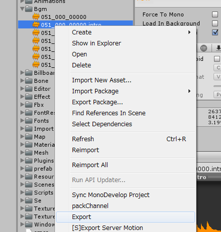

効果音、BGMについて¶
音関連を制御するためのマネージャとして、次のものを用意しています。
これらを用いて、アセットバンドルの管理、SEのグループ化、プライオリティ、同時発声数制限等を行います。 また、BGMは、イントロ＋ループ部分の再生を行ってくれます。
注釈
グループ化、プライオリティ、同時発声数制限は、3Dのみ対応しています。 2Dの音声は、同じ音が同時にならないような制御のみ行っています。
SEのアセットバンドルを作成する方法¶

@se.def記述方法¶
アセットバンドルを作成するときに、各SEに様々な情報を埋め込むことができます。 以下に例を挙げておきます。 ファイルは、UTF-8(BOM無し)で作成してください。
// click sound effect
SE(052_000_00020) {
VOLUME = 1;
PRIORITY = 1;
GROUP = 200;
POLYPHONY = 1;
};
// decide sound effect
SE(052_000_00030) {
VOLUME = 50%;
PRIORITY = 1;
GROUP = 200;
POLYPHONY = 1;
};
基本的な記述方法は、次の通りです。 エリアスも使え、同一の音声ファイルに別名を与え、違うパラメータを割り振ることが可能です。
SE(se file name) {
Property 0;
Property 1;
：
Property n;
};
SE(Alias name,SE file name) {
Property 0;
Property 1;
：
Property n;
};
| ID | ファイル名 |
|---|---|
| 000_000_00010 | 000_000_00010.wav等 |
| “click” | click.wav等 |
注釈
FiveCC (半角英数5文字)を使うときは、”～”でくくるのを忘れないでください
@se.defをコンパイルするときにインクルードされるファイル¶
次のファイルは、@se.defをコンパイルするときに、自動的にインクルードされます。 共通の設定は、このファイルに記述すると便利です。
Assets/KsSoft/Se/include/se.h
@se.defに使えるプロパティ¶
VOLUME = 数字¶
ボリュームを設定します。
値は、0～1の少数で指定するか、0～100%の百分率が使えます。
- VOLUME = 1;
GROUP = グループ番号¶
3Dとして音を鳴らした時のみ有効です。
グループは、0～255の整数で指定してください。 同グループ内で同時発声制限や、プライオリティなどを指定できます。
PRIORITY = プライオリティ¶
3Dとして音を鳴らした時のみ有効です。
発声する際のグループ内でのプライオリティを0～255の整数で設定します。 値が大きいほど優先度が高くなります。
POLYPHONY = 同時発声数¶
3Dとして音を鳴らした時のみ有効です。
1～255の間で設定して下さい。 同時発声数が許された数だけ、同グループ内の音声を鳴らそうとします。 同時発声数を超えたときは、鳴っている音声と優先順位を比べ高ければ、鳴っている音声を停止させ再生を開始します。
DISTANCE = 最少距離,最大距離¶
3Dとして音を鳴らした時のみ有効です。
最少距離よりも近いところで発生したとき、最大のボリュームで再生します。
逆に最大距離よりも離れると音が聞こえなくなります。
プリプロセッサ¶
C言語,C++言語とほぼ同じプリプロセッサが使えます。
| プリプロセッサ | 説明 |
|---|---|
| // コメント | ラインコメント |
| /* コメント */ | ブロックコメント |
| #include ファイル名 | ファイルをインクルードする |
| #define 記号定数の定義 | 記号定数の定義 |
| #define 関数マクロ | 関数マクロ |
| #if defined(記号定義) ～ #endif | 条件コンパイル |
| #ifdef ～ #endif | 条件コンパイル |
| #ifndef ～ #endif | 条件コンパイル |
| #pragma once | 多重インクルード防止 |
BuildTarget がマクロとして自動定義されています。
#if defined(StandaloneWindows)
MS-Windows
#else
Other
#endif
BGMのアセットバンドルを作成する方法¶
BGMを、予めイントロ部分、ループ部分に分けておいてアセットバンドル化することによって、マネージャ側が自動的に順番に再生を行ってくれます。
次の手順でアセットバンドル化してください。
- Assets/KsSoft/の下に、Bgmというフォルダを作ります。
- ループ部分は、 マルチID .mp3という名前でBgmフォルダ内においてください。
- イントロ部分は、 マルチID .intro.mp3という名前で同フォルダ内においてください。
- 準備ができたら、アセットバンドル化したいループファイルか、イントロファイルのどちらかを選択します。
- [右クリック]→[Export]を選択してください。
マルチID 部分が、アセットバンドル名になります。